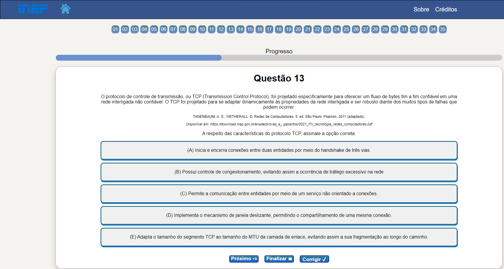

Instruções
Olá, seja bem-vindo(a)!
Abaixo confira as informações e instruções necessárias para realizar o Simulado do Enade de 2021 do curso de Redes de Computadores. Após a leitura você poderá clicar no botão INICIAR SIMULADO que o levará a primeira questão da prova.
- O simulado consiste em 35 questões objetivas, com 5 alternativas de resposta cada, de A a E.
- O simulado não possui tempo de duração.
- Para responder as questões você deve selecionar uma das alternativas de A a E, lembrando que ao clicar em alguma alternativa a resposta será contabilizada sem a possibilidade de alteração, ou seja, apenas clique na alternativa quando tiver a certeza da escolha.
- Para conferir a resposta, basta clicar no botão CORRIGIR que se encontra no canto inferior direito. Você irá visualizar a resposta correta por meio de um pop-up/janela, informando se a alternativa escolhida está certa ou errada e qual a resposta correta. Além disso é válido ressaltar que para sair do pop-up/janela, basta clicar no botão abaixo "Fechar X".
- Antes do enunciado da questão é possível visualizar o número de todas as questões da prova, sendo assim para navegar entre as questões ou responder alguma em específico basta clicar em algum número de 1 a 35. Além disso, para avançar uma questão, poderá clicar no botão PRÓXIMO que se encontra no canto inferior esquerdo.
- Clicando no botão FINALIZAR que se encontra abaixo entre os botões Próximo e Corrigir, você será redirecionado para a página de Resultados onde será apresentado a quantidade total de acertos, erros e questões não respondidas.

BOA SORTE